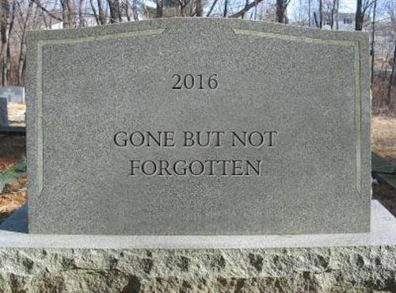

2020-04-15 08:00
In 2016 a small percentage of Bernie Sanders’ supporters refused to support the Democratic Party candidate, Hillary Clinton. I agreed with Bernie that Clinton’s “damn server” was not her main problem, nor were her tangled connections to oligarchs and war criminals through the Clinton Foundation, the $2 billion family business, my main objection to Clinton.
No, I was one of those people disgusted at the blood Clinton had on her hands from her stint crafting malign foreign policy and advocating regime change in the Middle East as Secretary of State. I voted Green and don’t regret my protest vote for a second, although some of my friends still believe it was people like me who tipped the scales in Trump’s favor.
They forget, of course, that for every one of us who voted Green — “robbing” Clinton of “her” vote — there were more than three people who voted for Gary Johnson, the Libertarian, thus robbing Donald Trump of three times our votes. In the grand scheme of things, the Libertarian vote hurt Republicans much more than the Green vote hurt Democrats.
In contrast to 1992, when Ross Perot received almost 19% of the vote, in 2016 third parties received a combined total of only 4.4% of the popular vote. Neither Jill Stein nor Gary Johnson received even a fraction of a single Electoral College vote — the only thing that really counts in a presidential election. The tiniest of fractions were, however, allocated to Colin Powell, John Kasich, Ron Paul, Bernie Sanders, and Faith Spotted Eagle. Despite winning the popular vote 48.18% to 46.09%, Democrats were defeated — not by the Greens but by a combination of the Electoral College, voter apathy, and Clinton’s own failure to campaign in key states.
So here we are four years later. Sanders, who once again ran on a progressive platform and lost to Centrist Democratic machinery, finds himself once again being a good soldier, supporting another Centrist. Once again some of his disgruntled supporters are being accused of acting irresponsibly by not playing the Two Party game with sufficient enthusiasm. And once again old accusations against Sanders supporters have re-surfaced.

It’s not clear how many Working Families Party, Our Revolution, or Democratic Socialists of America (DSA) members will vote for Joe Biden — in a time of pandemic and incipient fascism it’s going to be a lot more than you think — but the fact progressives are not eager to endorse Biden has some people in a tizzy.
American Prospect editor Harold Meyerson, for example, accuses DSA of “moronic rectitude” for withholding their endorsement of Biden. One hopes that Meyerson knows the difference between a grudging vote cast in the privacy of the voting booth and a full-throated public endorsement. Of course, it might also help if Biden reached out to the Democratic Left with progressive policy changes to earn that endorsement — at a time in our history when progressive policies are needed more than ever. And by now Biden should have chosen an African-American woman running mate. His dithering — and the ongoing market testing of various white female Centrists — say a lot about Biden, the DNC, and the power of Democratic Party’s PACs and big donors.
So I’m going to vote for the guy who’s not a fascist. I will probably even donate money to his campaign. But there are a couple of things about voting that bear repeating.
First, voters don’t owe anyone their votes. Those who don’t vote are a majority in many American elections. Voting statistics reveal the low opinion the electorate has of both parties, their hollow promises and their bullshit platforms. Though most of you will disagree with the following statement, it is true enough for those who hold it — the differences between the two mainstream parties are simply not significant enough to get most people off their couches on Election Day. Want more voters? Offer something worth voting for.
Second, voters don’t owe you their votes. A vote means what a voter wants it to mean. You may regard my vote as an obligation to get with your program and ensure that your candidate wins an election, but that’s not why I show up at the polls. Elections are not horse races. If they were there would occasionally be a pay-out. Elections are just as much referenda on ideas and principles as they are the ritual selection of interchangeable elected representatives.
Phrases like “electability” and “viability” are not Good Housekeeping seals of approval. They are mainly indictments of the hollowness of American politics. It’s not my fault that many of you vote for people you don’t even like that much — candidates who do test polling instead of actually believing in something and committing to fixing the root causes of the nation’s most serious problems. And since when do mainstream Democrats, who just concluded a vicious liberal red-baiting campaign against Sanders, believe in Marxist-Leninist Party Discipline? My vote is my own, not the Democratic Party’s.
By now we all know that elections have consequences, but so do campaigns and candidate choices. Give voters a good and decent candidate with good and decent policies and they’ll vote for her. Offer them the lesser of two evils, and an electorate conditioned to always snap to attention and choose American greatness will choose the greater evil every time.
Biden’s going to be an extremely long-shot this November. Don’t blame his loss on progressives.